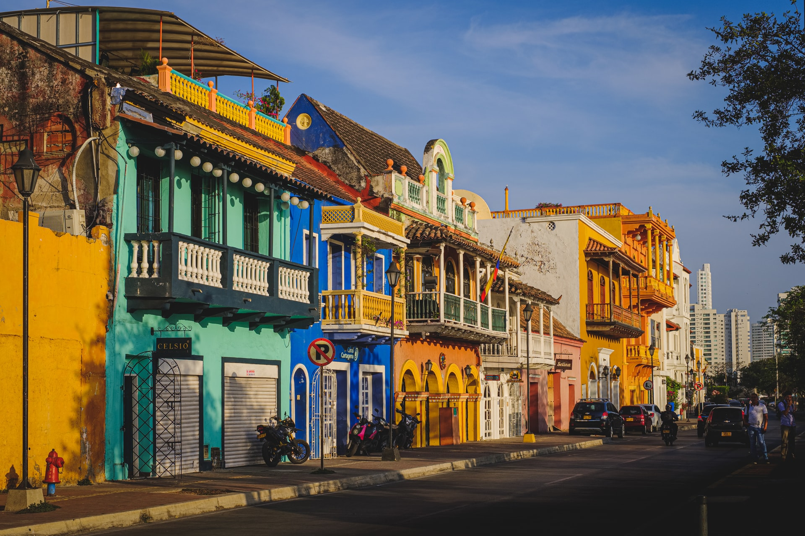

 Cartagena de Indias Internacionales $800.00 Cartagena es una ciudad portuaria en la costa caribeña de Colombia. Junto al mar, se encuentra la Ciudad Vieja amurallada, que se fundó en el siglo XVI, con plazas, calles de adoquines y edificios coloniales coloridos. Con un clima tropical, la ciudad también es un destino popular por sus playas. Se puede llegar en bote a la Isla de Barú, con playas de arena blanca y palmeras, y a las Islas del Rosario, famosas por sus arrecifes de coral